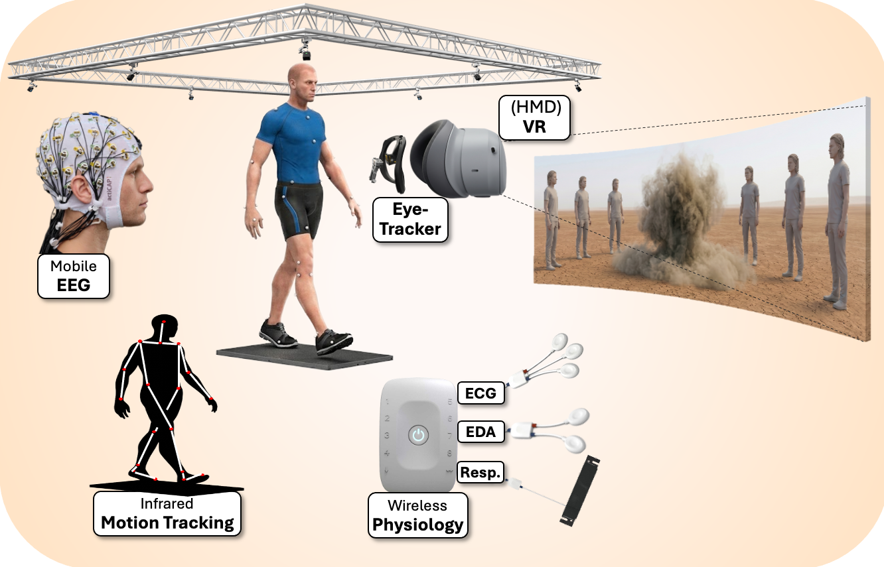

The Multi-Level Influences of Social Information:
a Multimodal, Virtual Reality Approach
In my PhD I investigate how social information influences us at the level of perception, decision and affect. Most lab studies of social influence have used static or non-interactive tasks, lacking the complexity of real-life social situations, with multiple agents. Here, I combine immersive virtual reality, which recreates naturalistic scenes with multiple people under tight experimental control, with mobile multimodal recordings (EEG, eye tracking, motion tracking and physiology) to capture brain–body dynamics as situations unfold. At the core is a novel ambiguous approach–avoidance task, where a disambiguating predator/prey stimulus forces high-stakes approach-avoidance decisions. Across different experiments, I populate this 3D world with virtual social agents, manipulating their social information in gaze, behavior and emotions.
- Supervisors
- Prof. Marcel Brass · Dr. Michael Gaebler
- Labs
- Social Intelligence Lab · Mind Body Emotion Lab
- Institutions
- IMPRS LIFE · Max Planck Institute for Human Development · Humboldt University of Berlin
- Methods
- EEGECG / EDA / respirationMotion captureEye trackingVirtual reality